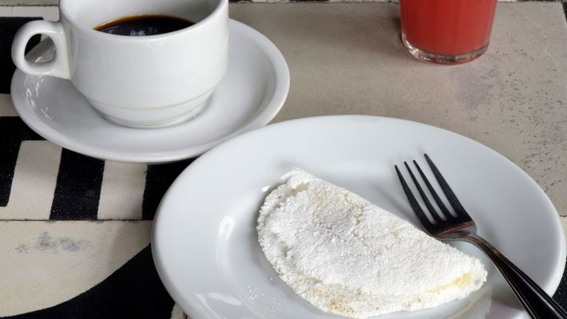

TAPIOCA

Foi escolhido esta receia porque quando minha vó era viva ela sempre comprava tapioca nos finais de semana.
INGREDIENTES
MASSA
- 500 g de farinha para tapioca (bijou)
- água o suficiente para dar o ponto
- sal a gosto
RECHEIO DE CALABRESA
- 1 kg de linguiça calabresa cortada em rodelas bem finas ou trituradas
- 2 colheres (sopa) de óleo
- 4 dentes de alho
- 1 cebola média picada
- 1/2 xícara (chá) de cheiro-verde
RECHEIO GOIABADA COM QUEIJO
- 220 g de goiabada em fatias
- 220 g de queijo coalho ou outro de sua preferência
RECHEIO DE DOCE DE LEITE
- 1 lata de doce de leite cremoso (350 g)
RECHEIO DE LEITE CONDENSADO
- 125 ml de leite condensado
RECHEIO DE COCO
- 100 g de coco ralado fresco
- 175 ml de leite de coco
MODO DE PREPARO
MASSA
- Em uma tigela, coloque o polvilho e vá adicionando a água até cobrir e ficar dois dedos acima.
- Deixe de um dia para o outro.
- Retire toda a água com a ajuda de um pano limpo sem deixar excesso.
- Vai ficar parecendo um bloco.
- Esfarele essa massa com as mãos.
- Passe pela peneira e acrescente o sal.
- Em uma frigideira anti-aderente, modele a tapioca como uma panqueca.
- Quando estiver pronta, a massa estará unida.
- Não deixe escurecer.
- Vire rapidamente e deixe secar do outro lado.
- Deve ser retirada do fogo ainda branquinha.
- Recheie a gosto.